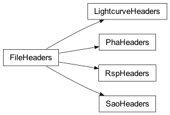

Swift BAT FITS Headers (gdt.missions.swift.bat.headers)¶
This module defines all of the FITS headers for the public data files. While these classes are not usually directly called by the user, we may load one up and see the contents and default values. For example, here is the set of header definitions for PHA files:
>>> from gdt.missions.swift.bat.headers import PhaHeaders
>>> hdrs = PhaHeaders()
>>> hdrs
<PhaHeaders: 4 headers>
Here is the PRIMARY header and default values (retrieved by index):
>>> hdrs[0]
TELESCOP= 'SWIFT ' / Telescope (mission) name
INSTRUME= 'BAT ' / Instrument name
OBS_ID = '' / Observation ID
TARG_ID = 0 / Target ID
SEG_NUM = 0 / Segment number
TIMESYS = 'TT ' / time system
MJDREFI = 51910 / MJD reference day Jan 2001 00:00:00
MJDREFF = '7.428703703703703e-4' / MJD reference (fraction of day) 01 Jan 2001 0
CLOCKAPP= '' / If clock correction are applied (F/T)
TIMEUNIT= 's ' / Time unit for timing header keywords
TSTART = 0.0 / As in the TIME column
TSTOP = 0.0 / As in the TIME column
DATE-OBS= ''
DATE-END= ''
ORIGIN = 'NASA/GSFC' / file creation location
CREATOR = '' / file creator
TLM2FITS= '' / Telemetry converter version number
DATE = '2024-02-12T20:02:15.863' / file creation date (YYYY-MM-DDThh:mm:ss UT
NEVENTS = 0 / Number of events
DATAMODE= '' / Datamode
OBJECT = '' / Object name
MJD-OBS = 0.0 / MJD of data start time
TIMEREF = 'LOCAL ' / reference time
EQUINOX = 2000.0 / Equinox for pointing RA/Dec
RADECSYS= 'FK5 ' / Coordinates System
USER = '' / User name of creator
FILIN001= '' / Input file name
TIMEZERO= 0.0 / Time Zero
CHECKSUM= '' / HDU checksum updated 2020-06-07T06:49:01
DATASUM = '' / data unit checksum updated 2020-06-07T06:32:34
PROCVER = '' / Processing script version
SOFTVER = ''
CALDBVER= '' / CALDB index versions used
SEQPNUM = 0 / Number of times the dataset processed
RA_OBJ = 0.0 / [deg] R.A. Object
DEC_OBJ = 0.0 / [dec] Dec Object
RA_PNT = 0.0 / [deg] RA pointing
DEC_PNT = 0.0 / [deg] Dec pointing
PA_PNT = 0.0 / [deg] Position angle (roll)
TRIGTIME= 0.0 / MET TRIGger Time for Automatic Target
CATSRC = ''
ATTFLAG = 100 / Attitude origin: 100=sat/spacecraft
UTCFINIT= 0.0 / [s] UTCF at TSTART
And here is the SPECTRUM header and default values:
>>> EXTNAME = 'SPECTRUM' / name of this binary table extension
HDUCLASS= '' / Conforms to OGIP/GSFC standards
HDUCLAS1= '' / Contains spectrum
GAINAPP = '' / Gain correction has been applied
TIMESYS = 'TT ' / time system
MJDREFI = 51910 / MJD reference day Jan 2001 00:00:00
MJDREFF = '7.428703703703703e-4' / MJD reference (fraction of day) 01 Jan 2001 0
TIMEREF = 'LOCAL ' / reference time
TASSIGN = 'SATELLITE' / Time assigned by clock
TIMEUNIT= 's ' / Time unit for timing header keywords
TIERRELA= 0.0 / [s/s] relative errors expressed as rate
TIERABSO= 0.0 / [s] timing precision in seconds
TRIGTIME= 0.0 / MET TRIGger Time for Automatic Target
TSTART = 0.0 / As in the TIME column
TSTOP = 0.0 / As in the TIME column
DATE-OBS= ''
DATE-END= ''
CLOCKAPP= '' / If clock correction are applied (F/T)
TELAPSE = 0.0 / [s] Total elapsed time from start to stop
ONTIME = 0.0 / [s] Accumulated on-time
LIVETIME= 0.0 / [s] ONTIME multiplied by DEADC
EXPOSURE= 0.0 / [s] Accumulated exposure
DEADC = 0.0 / Dead time correction factor
TIMEPIXR= 0.0 / Time bin alignment
TIMEDEL = 0.0 / [s] time resolution of data
TELESCOP= 'SWIFT ' / Telescope (mission) name
INSTRUME= 'BAT ' / Instrument name
DATAMODE= '' / Datamode
OBS_ID = '' / Observation ID
TARG_ID = 0 / Target ID
SEG_NUM = 0 / Segment number
EQUINOX = 2000.0 / Equinox for pointing RA/Dec
RADECSYS= 'FK5 ' / Coordinates System
OBS_MODE= '' / default
ORIGIN = 'NASA/GSFC' / file creation location
CREATOR = '' / file creator
TLM2FITS= '' / Telemetry converter version number
DATE = '2024-02-12T20:02:15.863' / file creation date (YYYY-MM-DDThh:mm:ss UT
PROCVER = '' / Processing script version
SOFTVER = ''
CALDBVER= '' / CALDB index versions used
SEQPNUM = 0 / Number of times the dataset processed
RA_OBJ = 0.0 / [deg] R.A. Object
DEC_OBJ = 0.0 / [dec] Dec Object
RA_PNT = 0.0 / [deg] RA pointing
DEC_PNT = 0.0 / [deg] Dec pointing
PA_PNT = 0.0 / [deg] Position angle (roll)
CATSRC = ''
ATTFLAG = 100 / Attitude origin: 100=sat/spacecraft
UTCFINIT= 0.0 / [s] UTCF at TSTART
CHECKSUM= '' / HDU checksum updated 2020-06-07T06:49:01
DATASUM = '' / data unit checksum updated 2020-06-07T06:32:34
See Data File Headers for more information about creating and using FITS headers.
Reference/API¶
gdt.missions.swift.bat.headers Module¶
Classes¶
Class Inheritance Diagram¶
